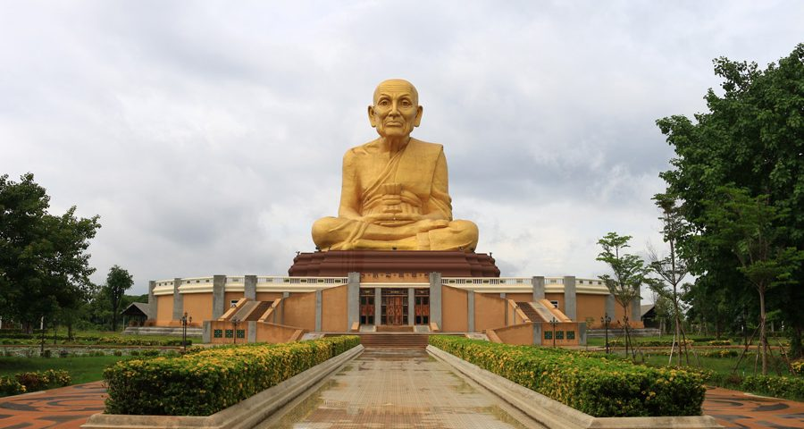

9.พุทธอุทยานมหาราช
อุทยานมหาราช และตลาดหลวงปู่ทวด ตั้งอยู่ในตําบลบ้านใหม่ อําเภอมหาราช ในอดีตพื้นที่บริเวณนี้เป็นเส้นทางเดินทัพของสมเด็จพระนเรศวรมหาราช จึงเป็นที่มาของชื่อพุทธอุทยานมหาราช ตั้งอยู่ในตําบลบ้านใหม่ อําเภอมหาราช ในอดีตพื้นที่บริเวณนี้เป็นเส้นทางเดินทัพของสมเด็จพระนเรศวรมหาราช จึงเป็นที่มาของชื่อพุทธอุทยานมหาราช ภายในบริเวณสร้างรูปเหมือนของพระสงฆ์ที่มีขนาดใหญ่ที่สุดในโลก คือ สมเด็จหลวงพ่อทวดเหยียบน้ำทะเลจืด ขนาดหน้าตักกว้าง 24 เมตร ความสูง รวมฐาน 51 เมตร สร้างจากปูนหุ้มสัมฤทธิ์ เคลือบสีทอง โดยวัตถุประสงค์การก่อสร้างเพื่อเป็นสิริมงคลแก่ประชาชนทั่วไป และต้องการให้เป็นหนึ่งในโครงการเฉลิมพระเกียรติพระบาทสมเด็จพระบรมชนกาธิเบศร มหาภูมิพลอดุลยเดชมหาราช บรมนาถบพิตร และสมเด็จพระนางเจ้าสิริกิติ์ พระบรมราชินีนาถ พระบรมราชชนนีพันปีหลวง บนเนื้อที่กว่า 200 ไร่ ภายในอุทยานกว้างขวางร่มรื่น โอบล้อมด้วยบึงน้ำขนาดใหญ่ มีการจัดทําพื้นที่อย่างสวยงามให้ประชาชนมากราบไหว้องค์หลวงปู่ทวด และยังถือเป็นสถานที่ท่องเที่ยว สถานที่พักผ่อนหย่อนใจของนักท่องเที่ยว สิ่งที่น่าสนใจอีกอย่างหนึ่ง คือตลาดหลวงปู่ทวด เป็นตลาดที่รวบรวมอาหารและของฝากไว้ตลอดทางเดินไปสักการะหลวงปู่ทวด ทั้งอาหารมื้อหลัก อาหารว่าง ขนมไทยโบราณ เครื่องดื่ม พร้อมสินค้าโอท็อปมากมาย อีกทั้งร้านกาแฟริมน้ําบรรยากาศดี นักท่องเที่ยวสามารถแวะสักการะองค์หลวงปู่ทวดได้